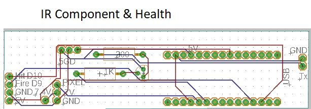

Intra-red tx, rx and pixel (health)
Overview
This component is an optional component that does inhibit or affect the other components if it is missing.
It will allow the tank to fire a infra-red pulse, and will detect an infra-red pulse.
Wiring
5V, Gnd, Fire, Hit Detected
Operation
When the unit powers up the pixels health will be set to 4
When the fire line transitions from gnd to 5V, the unit will fire its infra-red.
When the unit detects an infra red hit, it will transition the Hit Detected line from gnd to 5V and back to Gnd, 100ms in between transitions
Layout
